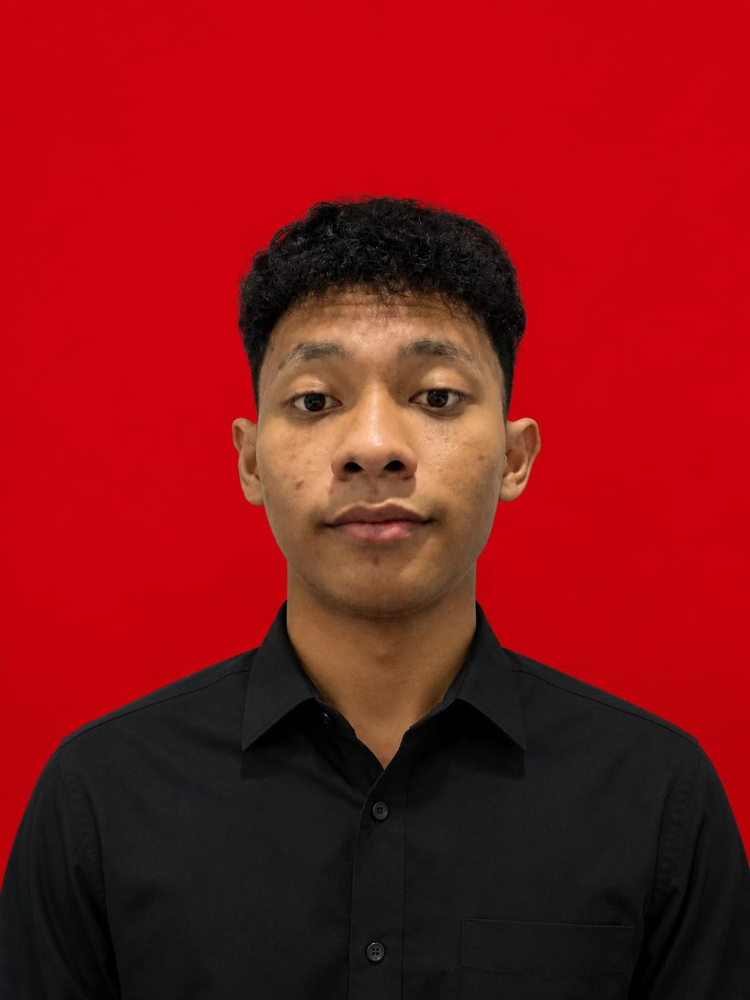
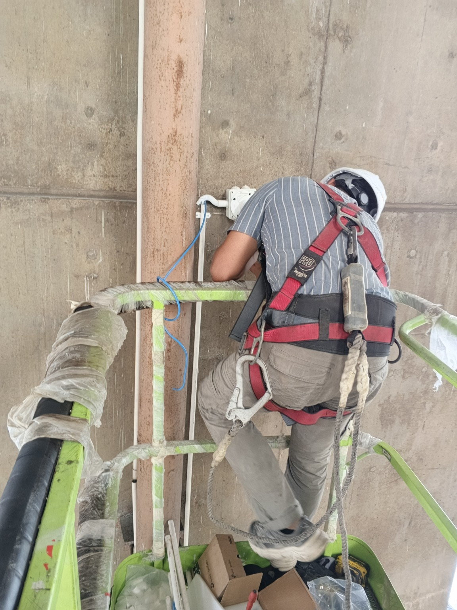
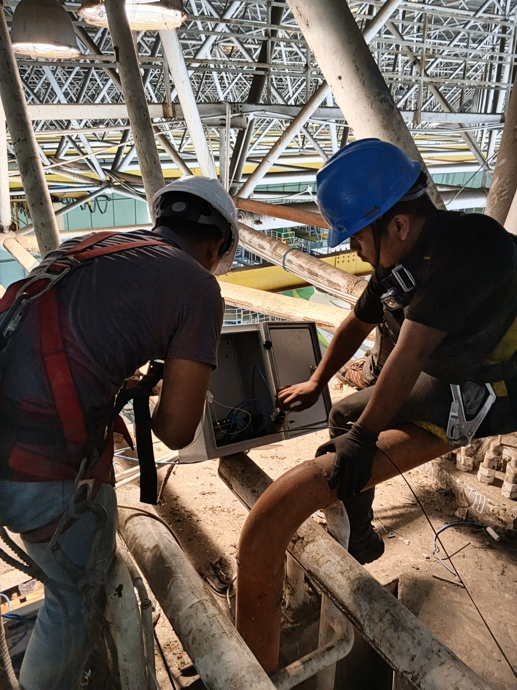
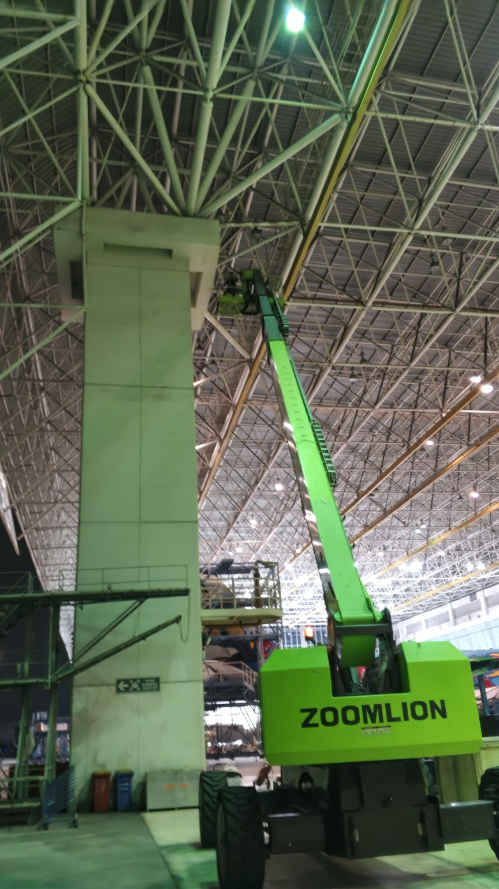

Network Installation
LAN installation, UTP cabling, basic IP addressing and network setup.
IT • NETWORK • INFRASTRUCTURE
Computer and Network Engineering graduate with hands-on experience in CCTV installation, network cabling, fiber optic, computer setup, and technical troubleshooting.

Riski NovianIT & NetworkI am Riski Novian, a graduate of SMK Almussyarofah Jakarta, majoring in Computer and Network Engineering (TKJ).
I am interested in IT infrastructure, networking, CCTV systems, cabling, and technical problem solving. I am eager to continue developing my technical skills while contributing to a professional team.
LAN installation, UTP cabling, basic IP addressing and network setup.
CCTV installation, cabling, device setup, connectivity checks and troubleshooting.
Hands-on experience with fiber-optic cable installation and routing.
Computer setup, software installation, maintenance and troubleshooting.
Basic understanding of DHCP, NAT, gateway and network configuration.
PC assembly, hardware checking and basic maintenance support.
IT / Network & CCTV-related field experience
Computer & Network Engineering
Computer and Network Engineering (TKJ)
Selected field documentation demonstrating hands-on technical experience.



Hands-on installation work covering 32 CCTV points. Activities included cable routing, installation support, connectivity checking, and troubleshooting in a hangar environment.
Open to opportunities in IT Support, Network, Infrastructure, CCTV, and related technical roles.